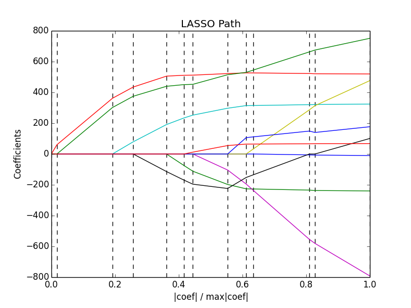

Lasso path using LARS¶
Computes Lasso Path along the regularization parameter using the LARS algorithm on the diabetes dataset. Each color represents a different feature of the coefficient vector, and this is displayed as a function of the regularization parameter.
Script output:
Computing regularization path using the LARS ...
.
Python source code: plot_lasso_lars.py
print(__doc__)
# Author: Fabian Pedregosa <fabian.pedregosa@inria.fr>
# Alexandre Gramfort <alexandre.gramfort@inria.fr>
# License: BSD 3 clause
import numpy as np
import pylab as pl
from sklearn import linear_model
from sklearn import datasets
diabetes = datasets.load_diabetes()
X = diabetes.data
y = diabetes.target
print("Computing regularization path using the LARS ...")
alphas, _, coefs = linear_model.lars_path(X, y, method='lasso', verbose=True)
xx = np.sum(np.abs(coefs.T), axis=1)
xx /= xx[-1]
pl.plot(xx, coefs.T)
ymin, ymax = pl.ylim()
pl.vlines(xx, ymin, ymax, linestyle='dashed')
pl.xlabel('|coef| / max|coef|')
pl.ylabel('Coefficients')
pl.title('LASSO Path')
pl.axis('tight')
pl.show()
Total running time of the example: 0.12 seconds ( 0 minutes 0.12 seconds)